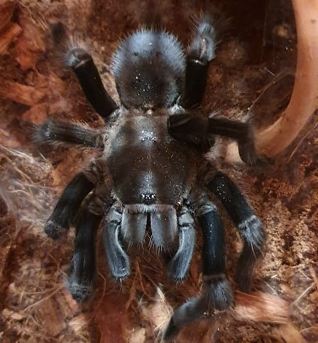

Old World vs New World
-

Old World
Bity and Dangerous
-

New World
Itchy and Calm
Knowledge Base
Learn More About Taratulas
Monsters At Your Door
Delivery to your doorstep
Free customer Service
Beginners Tarantula Kit - A.Geniculata
50 EUR
Beginners Tarantula Kit - G.Rosea
80 EUR
Beginners Tarantula Kit - B. Vanagns
40 EUR
Beginners Tarantula Kit - N. Chromatus
70 EUR